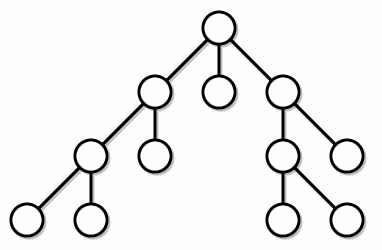
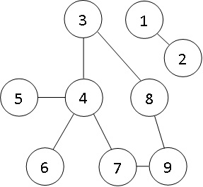

Обход в глубину
DFS один самых распространенных алгоритмов на графы. Основная суть состоит в том, чтобы идти по графу пока не посетим все вершины. Если у проверяемой вершины есть путь в другую вершину, в которой мы еще не были, то мы идем в нее и начинаем проверять уже ее. Все вершины, в которых были, мы помечаем, чтобы не пойти в них еще раз. Когда мы дойдем до вершины, в которой уже нет доступных путей, то мы возвращаемся на один шаг назад, то есть к предыдущей вершине и проверяем ее и так далее. Обход заканчивается, когда мы вернулись к стартовой вершине и из нее больше нет доступных путей.
Если в графе N вершин и M ребер, то сложность обхода составляет O(N + M).
Навигация по странице:
1. Хранение графа
2. Выделение памяти
3. Рекурсивный алгоритм DFS
4. Нерекурсивный алгоритм DFS
5. Задача с решением
Обход в глубину:
Хранение графа
Граф будет храниться в массиве структур. Полностью про хранение графа в программе смотрите в разделе представление графа в программе.
Каждый элемент массива структур хранит информацию об одной из вершин графа, а именно:
1) пути из этой вершины;
2) количество таких путей;
3) посещали ли мы уже эту вершину или нет.
Вот так выглядит такая структура:
struct vertice { int* paths; // пути int number_of_paths; // кол-во путей int flag; // были вершине или нет };
Так как изначально мы не знаем сколько у каждой вершины путей, то придется выделять такую память динамически. В начале программы нужно для каждого элемента массива структур динамически выделить память под один элемент массива путей с помощью функции malloc. Далее после каждого ввода пары вершин, описывающие связь ребром между этими вершинами, мы выделяем дополнительный элемент с помощью функции realloc:
scanf("%i%i", &v, &u); // между этими вершинами есть путь Graph[v - 1].paths = realloc(Graph[v - 1].paths, (Graph[v - 1].number_of_paths + 2) * sizeof(int)); Graph[u - 1].paths = realloc(Graph[u - 1].paths, (Graph[u - 1].number_of_paths + 2) * sizeof(int));
Сразу после этого добавляем в массив путей новую вершину, в которую можно попасть из текущей. Добавление путей для неориентированного графа:
Graph[v - 1].paths[Graph[v - 1].number_of_paths] = u - 1; Graph[v - 1].number_of_paths++; Graph[u - 1].paths[Graph[u - 1].number_of_paths] = v - 1; Graph[u - 1].number_of_paths++;
Таким образом мы добавили путь из v в u и наоборот.
Для ориентированного графа необходимы только первые две строчки при условии, что ребро имеет направление из v в u.
Естественно изначально у каждой вершины количество путей равно нулю и никакую вершину мы еще не посещали, поэтому для любой i верно, что Graph[i].flag = 0 и Graph[i].number_of_paths = 0.
Рекурсивный алгоритм DFS
1
2
3
4
5
6
7
8
9
10
11
12
13
14
15
16
17
18
19
20
21
22
23
24
25
26
27
28
29
30
31
32
33
34
35
36
37
38
39
40
41
42
43
44
#include<stdio.h> #include<stdlib.h> struct vertice { int* paths; // пути int number_of_paths; // кол-во путей int flag; // были в вершине или нет }; void DFS(struct vertice G[], int cur) { int l = G[cur].number_of_paths; for (int j = 0; j < l; j++) { if (G[G[cur].paths[j]].flag == 0) { G[G[cur].paths[j]].flag = 1; DFS(G, G[cur].paths[j]); } } return; } int main() { struct vertice Graph[100]; int n, m, i, j, v, u; scanf_s("%i %i", &n, &m); for (i = 0; i < n; i++) { // начальная инициализация Graph[i].flag = 0; // изначально никакая вершина не посещена Graph[i].number_of_paths = 0; // массив путей изначально пуст Graph[i].paths = malloc(sizeof(int)); // выделяем динамически память } for (i = 0; i < m; i++) { // заполнение массива структур scanf_s("%i%i", &v, &u); Graph[v - 1].paths = realloc(Graph[v - 1].paths, (Graph[v - 1].number_of_paths + 2) * sizeof(int)); Graph[u - 1].paths = realloc(Graph[u - 1].paths, (Graph[u - 1].number_of_paths + 2) * sizeof(int)); Graph[v - 1].paths[Graph[v - 1].number_of_paths] = u - 1; Graph[v - 1].number_of_paths++; Graph[u - 1].paths[Graph[u - 1].number_of_paths] = v - 1; Graph[u - 1].number_of_paths++; } int start = 0; Graph[start].flag = 1; // мы сейчас в этой вершине DFS(Graph, start); // функция обхода return 0; }
! В данном примере не проверяются входные данные и правильность выделения памяти под динамические массивы. Ввод с проверками представлен в BFS (строки 41 - 60).
Следующий уровень рекурсии - это новая вершина. После того, как мы оказались в вершине, из которой нет больше доступных путей, мы возвращаемся на один уровеь назад - в вершину, из которой пришли в данную. Алгоритм продолжается, пока мы не пройдем все доступные вершины и не вернемся на самый первый уровень (в вершину start) в строчку 19.
Нерекурсивный алгоритм DFS
Для нерекурсивного обхода нам понадобиться еще две переменные в структуре, а именно:
1) номер вершины, из которой мы пришли в эту(предок вершины);
2) на каком элементе закончили проверку путей из вершины.
Теперь структура будет выглядеть так:
struct vertice { int* paths; // пути int number_of_paths; // кол-во путей int flag; // были в вершине или нет int ancestor; // предок вершины int exit; // на каком элементе закончили проверку };
Давайте посмотрим на алгоритм обхода в глубину с вводом всего графа:
1
2
3
4
5
6
7
8
9
10
11
12
13
14
15
16
17
18
19
20
21
22
23
24
25
26
27
28
29
30
31
32
33
34
35
36
37
38
39
40
41
42
43
44
45
46
47
48
49
50
51
52
53
54
55
56
57
58
59
60
#define _CRT_SECURE_NO_WARNINGS #include<stdio.h> #include<stdlib.h> struct vertice { int* paths; // пути int number_of_paths; // кол-во путей int ancestor; // предок вершины int flag; // были в вершине или нет int exit; // на каком элементе закончили проверку }; int main() { struct vertice Graph[100]; int n, m, i, j, v, u, anc; scanf("%i%i", &n, &m); for (i = 0; i < n; i++) { // начальная инициализация Graph[i].flag = 0; // изначально никакая вершина не посещена Graph[i].number_of_paths = 0; // изначально вообще нет путей Graph[i].exit = 0; // изначально начинаем проверку с 0 Graph[i].paths = malloc(sizeof(int)); // выделяем динамически память } for (i = 0; i < m; i++) { // заполнение массива структур scanf("%i%i", &v, &u); Graph[v - 1].paths = realloc(Graph[v - 1].paths, (Graph[v - 1].number_of_paths + 2) * sizeof(int)); Graph[u - 1].paths = realloc(Graph[u - 1].paths, (Graph[u - 1].number_of_paths + 2) * sizeof(int)); Graph[v - 1].paths[Graph[v - 1].number_of_paths] = u - 1; Graph[v - 1].number_of_paths++; Graph[u - 1].paths[Graph[u - 1].number_of_paths] = v - 1; Graph[u - 1].number_of_paths++; } // начало обхода int start = 0; int cur = start; // в этой переменной храним текущую вершину Graph[cur].flag = 1; // мы сейчас в этой вершине int fl = 0; while (fl == 0) { j = Graph[cur].exit; while (j < Graph[cur].number_of_paths) { // просматриваем пути из вершины cur Graph[cur].exit++; if (Graph[Graph[cur].paths[j]].flag == 0) { // если еще не ходили в эту вершину, то идем Graph[Graph[cur].paths[j]].flag = 1; anc = cur; cur = Graph[cur].paths[j]; // замена текущей вершины Graph[cur].ancestor = anc; j = -1; } j++; } if (cur == start) { // если обошли весь граф, то завершаем обход fl = 1; } else { // иначе возвращаемся в предыдущую вершниу cur = Graph[cur].ancestor; } } // конец обхода return 0; }
Как мы видим, нерекурсивный алгоритм дольше писать. Но нужно понимать, что использование рекурсивного алгоритма подразумевает использование практически не контролируемого ресурса: стека вызовов, который может быть переполнен. Поэтому в некоторых задачах лучше использовать нерекурсивный алгоритм.
Задача
Есть n человек, пронумерованных от 1 до n. Так получилось, что у K-ого человека сегодня день рождения и он хочет пойти с друзьями в лазертаг.
Чтобы в него пойти нужно ровно P человек вместе с именинником. Если людей будет не хватать, то каждый друг начнет звать уже своих друзей и так далее. Всего
дружат m пар людей.
Вам нужно вывести номера людей, которые пойдут в лазертаг. Если ответов несколько, то можно вывести любой из них. Гарантируется, что P точно меньше количества людей, которые
могут пойти в лазертаг.
Входные данные:
Первая строка содержит целые числа n(2 ≤ n ≤ 100), m(1 ≤ m ≤ 100), K(1 ≤ K ≤ 100),
P(2 ≤ P ≤ 100) - количество людей, количества пар друзей, номер человека, у которого сегодня день рождения и нужное количество людей в лазертаг
соответственно.
Следующие m строк содержат два числа, обозначающие дружбу между человеком v и человеком u.
Выходные данные:
Вывести через пробел номера людей, которые должны прийти в лазертаг. Именинника вывести первым.
Пример:
| Ввод | Вывод |
| 9 8 3 6 1 2 8 9 6 4 4 7 3 4 4 5 7 9 8 3 |
3 4 6 7 9 8 |
Граф из примера выглядит так:
Для решения один раз запускаем DFS, начиная с вершины K - 1. Выводим номера друзей пока их количество меньше или равно P. Минус использования рекурсии заключается в том, что когда мы выведем ответ, то не сразу закончим программу, так как рекурсия будет работать до полного обхода графа. Поэтому попытайтесь самим написать нерекурсивный алгоритм для этой задачи.
1
2
3
4
5
6
7
8
9
10
11
12
13
14
15
16
17
18
19
20
21
22
23
24
25
26
27
28
29
30
31
32
33
34
35
36
37
38
39
40
41
42
43
44
45
46
47
48
49
#define _CRT_SECURE_NO_WARNINGS #include<stdio.h> #include<stdlib.h> struct vertice { int* paths; // пути int number_of_paths; // кол-во путей int flag; // были в вершине или нет }; int DFS(struct vertice G[], int cur, int p, int numb) { int l = G[cur].number_of_paths; for (int j = 0; j < l; j++) { if (G[G[cur].paths[j]].flag == 0) { numb++; if (numb <= p) { printf("%i ", G[cur].paths[j] + 1); } G[G[cur].paths[j]].flag = 1; numb = DFS(G, G[cur].paths[j], p, numb); } } return numb; } int main() { struct vertice Graph[100]; int n, m, K, P, i, j, v, u; scanf("%i%i%i%i", &n, &m, &K, &P); for (i = 0; i < n; i++) { // начальная инициализация Graph[i].flag = 0; Graph[i].number_of_paths = 0; Graph[i].paths = malloc(sizeof(int)); } for (i = 0; i < m; i++) { scanf("%i%i", &v, &u); Graph[v - 1].paths = realloc(Graph[v - 1].paths, (Graph[v - 1].number_of_paths + 1) * sizeof(int)); Graph[u - 1].paths = realloc(Graph[u - 1].paths, (Graph[u - 1].number_of_paths + 1) * sizeof(int)); Graph[v - 1].paths[Graph[v - 1].number_of_paths] = u - 1; Graph[v - 1].number_of_paths++; Graph[u - 1].paths[Graph[u - 1].number_of_paths] = v - 1; Graph[u - 1].number_of_paths++; } int start = K - 1; // начинаем с K человека printf("%i ", K); int numb = 1; // кол-во человек, которые идут в лазертаг Graph[start].flag = 1; DFS(Graph, start, P, numb); return 0; }
Code.C
© Copyright Павел Калашников 2021
обратная связь code.c04@mail.ru